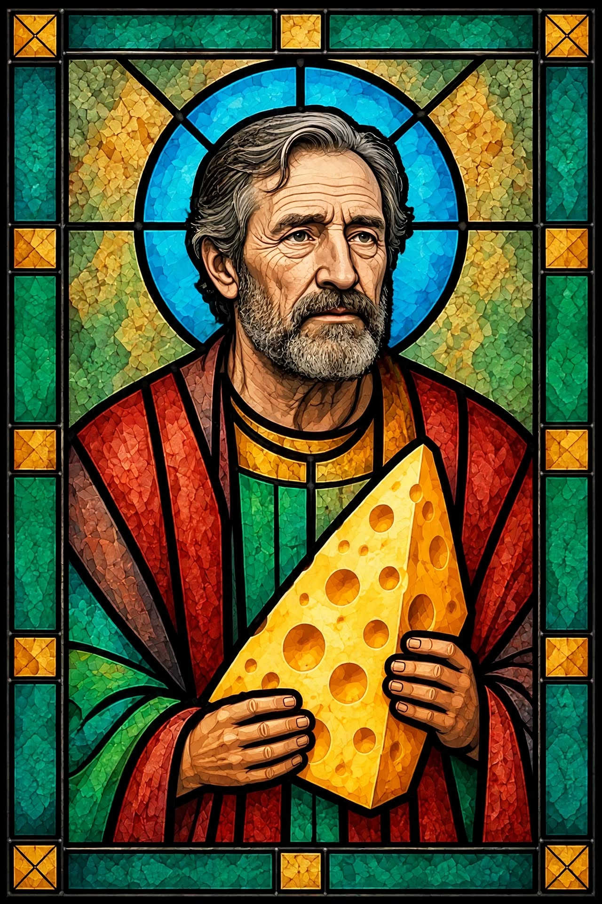
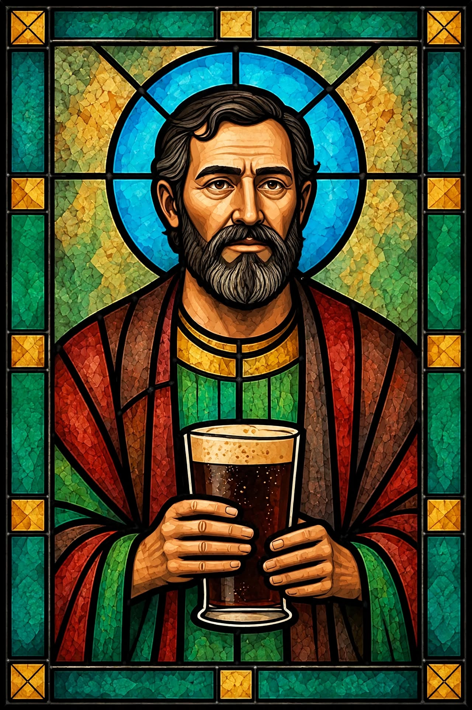
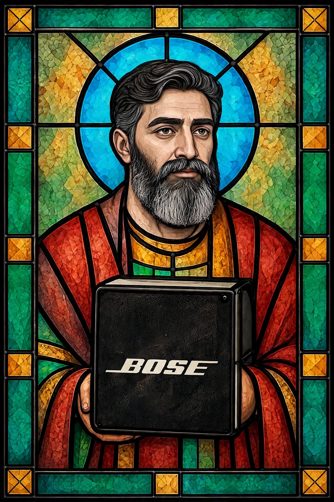

BLUES ROCK FROM THE HEART.
Raw. Honest. Soul, grit and groove.
A new five-piece bringing the blues back to the shed.
We’re The Tin Shed Prophets. Five mates, one shed, and a whole lot of blues.
Formed in 2026, we’re writing new songs and putting our own spin on the classics.
No backing tracks. No click. Just five people playing from the heart.
Think smoky bars, loud guitars, and songs that stick with you.
GUITAR

VOCALS

DRUMS

BASS
HARMONICA
We’re in the shed writing and recording our first tracks.
Follow us and be the first to hear when we drop.
Want The Tin Shed Prophets at your pub, festival or event?
Email: tinshedprophets@gmail.com
GET IN TOUCH